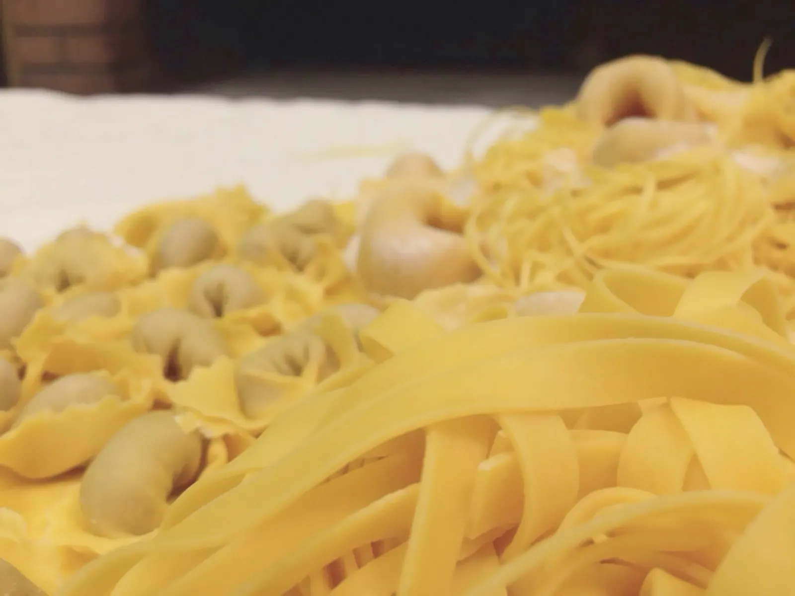
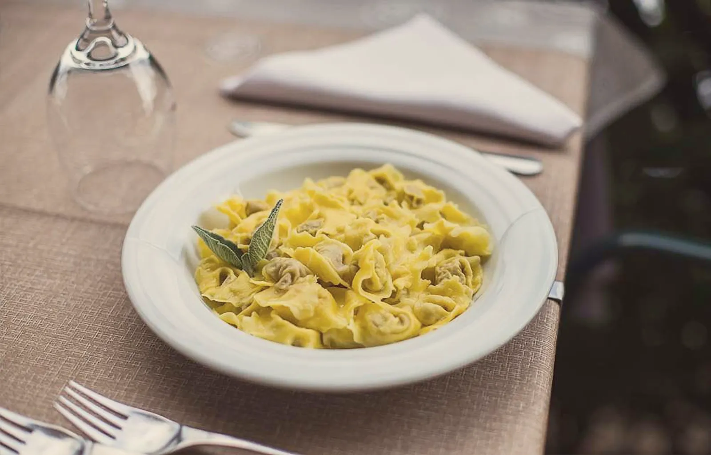
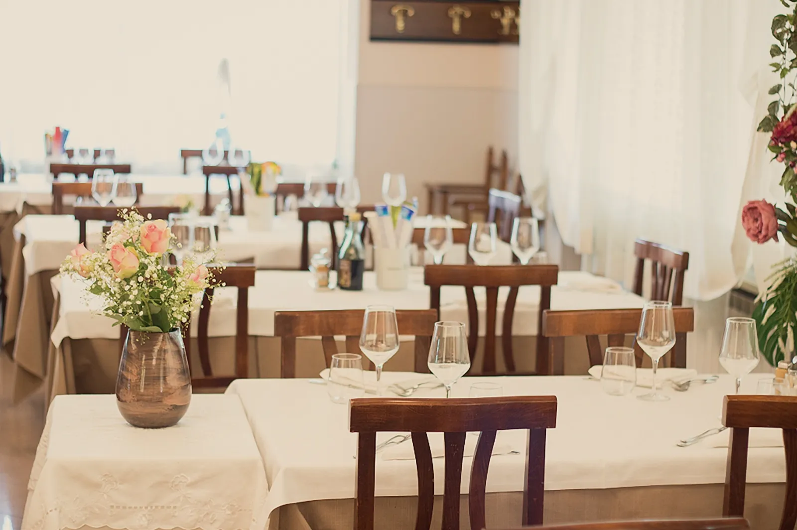
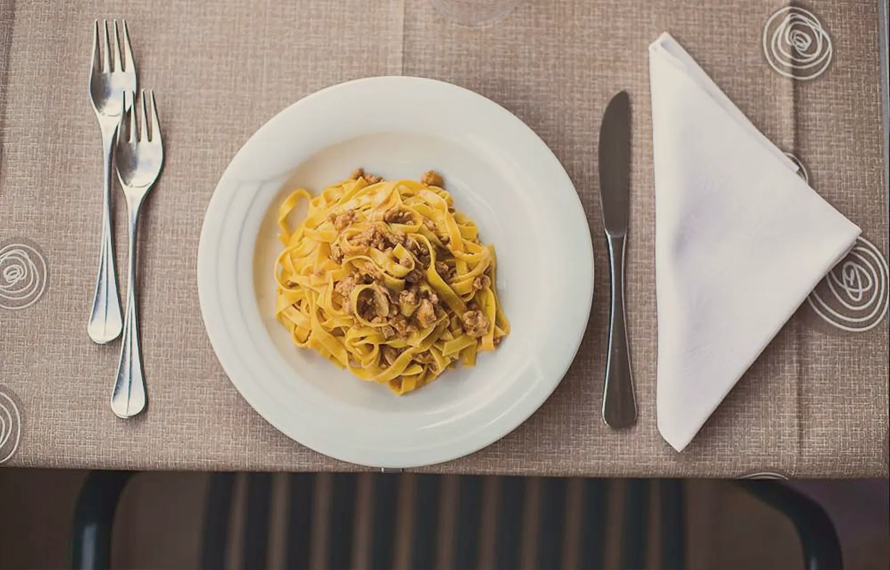
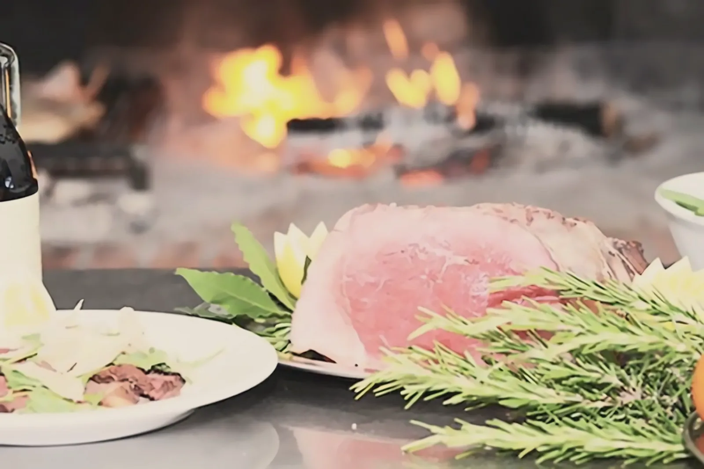
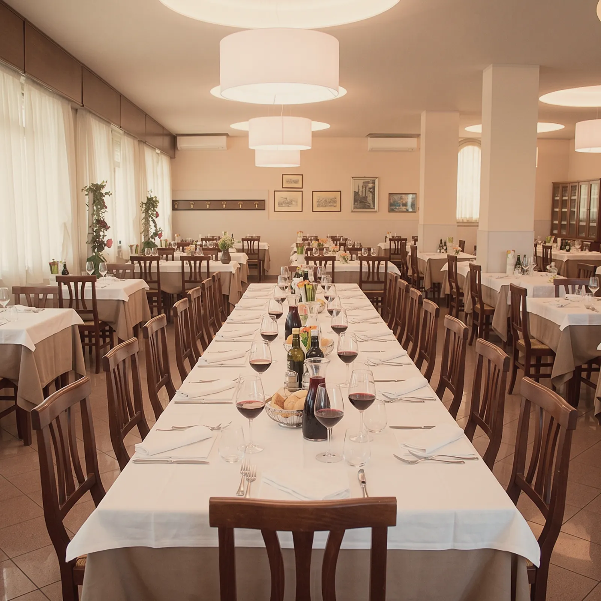
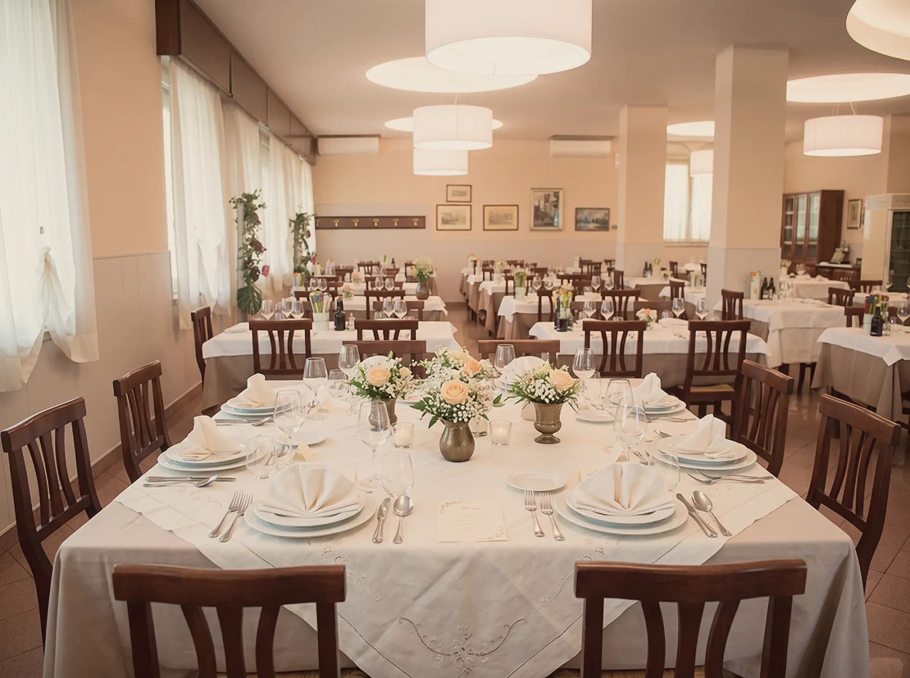
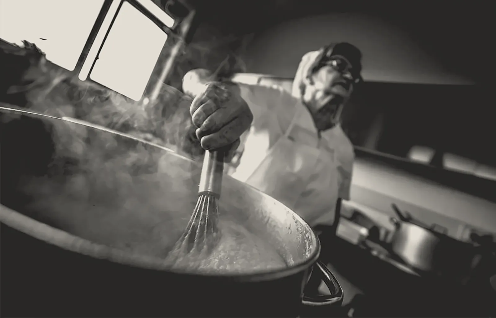

Liebesknoten-Tortellini
11,00 €
Das Tortellino aus Valeggio, hauchdünn wie ein Taschentuch: mit Butter und Salbei oder in Brühe.
Heute geöffnet · 12:00–14:00
Ein Familienrestaurant in Valeggio sul Mincio, nur wenige Schritte von Borghetto entfernt. Handgerollte Pasta, Fleisch vom Grill, Weine aus der Region und ein Parkplatz, der sogar für Reisebusse groß genug ist.


Aus unserer Küche

11,00 €
Das Tortellino aus Valeggio, hauchdünn wie ein Taschentuch: mit Butter und Salbei oder in Brühe.

11,00 €
Handgerollte Eiernudeln mit langsam gegartem weißem Ragù.

ab 9,00 €
Rinderkotelett, Tagliata mit Rucola und Grana, Lammkoteletts.

Gruppen, Ausflüge und Reisebusse
Reisebüros, Pfarreien, Betriebsausflüge: ein maßgeschneidertes Menü mit Preis pro Person, ein großer Speisesaal und ein Service, der sich an Ihren Zeitplan hält. Ihr Reisebus parkt direkt bei uns.
Angebot anfordern
Feiern
Taufen, Erstkommunion, Firmungen, Jubiläen. Wir stellen das Menü gemeinsam zusammen und bereiten den Saal für Sie vor.
Ihr Fest planen
Unsere Geschichte
Seit 1967 empfängt unsere Familie alle, die durch Valeggio kommen, mit derselben Küche wie eh und je: Einfachheit, ehrliche Zutaten und herzliche Gastfreundschaft.
Unsere Geschichte lesenÖffnungszeiten und Adresse
Ristorante Mara
Via Mantovana 1180, Valeggio sul Mincio
Die Karte stammt von Google Maps: Wenn Sie sie laden, kann Google Cookies verwenden. Mehr erfahren